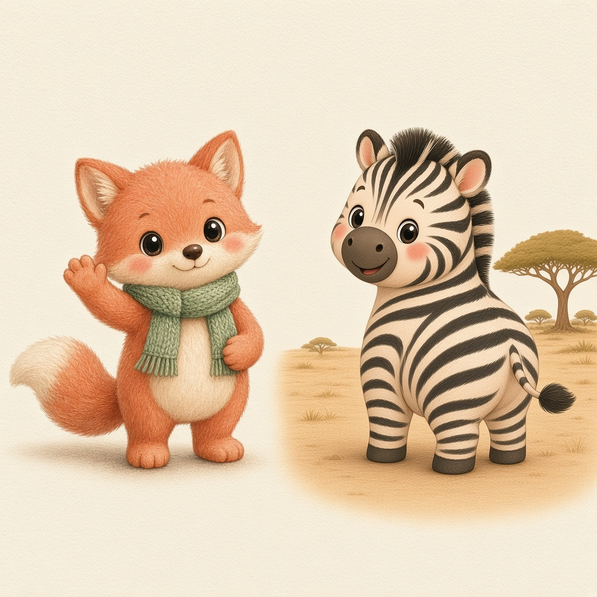

1
Mira
Señala la letra grande. Recórrela con un dedo.

Las aventuras del alfabeto de Pip
Una aventura de letras
De 3 a 7 añosDescubre cada letra con Pip, el zorrito.
Las aventuras del alfabeto de Pip
Una aventura de letras
Un abecedario ilustrado para lectores curiosos.
Copyright © 2026 Your Name. All rights reserved. No part of this book may be reproduced without permission, except for brief quotations in reviews.
Illustrations and layout are original to this edition. Typefaces: Nunito, Fredoka, Baloo 2 and Baloo Paaji 2 (SIL Open Font License).
Pip está feliz de que hayas venido.

Este es Pip, un zorrito con una curiosidad enorme. Pip trepa letras, prueba manzanas, vuela cometas y hace cien preguntas. En cada página, Pip descubre algo nuevo — y tú también.
¿Puedes encontrar a Pip en cada letra?
Léanlo juntos. Señalen, jueguen y párense cuando quieran. No hay una forma incorrecta.
Señala la letra grande. Recórrela con un dedo.
Di el sonido y después di la palabra en voz alta.
¿Dónde se esconde Pip esta vez? ¿Qué está haciendo?
Mira la ilustración grande. Hablen juntos del dato curioso.

Árbol
Un árbol da sombra, oxígeno y un hogar a los pájaros.

Barco
Un barco flota y nos lleva por el agua.

Casa
Una casa es el lugar donde nos sentimos seguros.

Dado
Un dado tiene seis caras y cada una tiene puntos.

Elefante
Un elefante usa su trompa para beber, saludar y darse un baño.

Flor
Una flor tiene pétalos y a menudo un olor dulce.

Gato
Un gato ronronea cuando se siente querido.

Helado
El helado es frío, dulce y se derrite si no lo comes pronto.
Isla
Una isla es tierra rodeada de agua por todos lados.
Jirafa
Una jirafa tiene el cuello más largo de todos los animales.

Kiwi
El kiwi es una fruta peluda por fuera y verde por dentro.

Luna
La luna brilla de noche porque refleja la luz del sol.
Manzana
Una manzana cruje cuando le das un buen bocado.

Nube
Una nube está hecha de gotitas de agua muy pequeñas.

Ñandú
El ñandú es un ave grande de América que corre muy rápido.

Oso
Un oso duerme un sueño muy largo cuando llega el invierno.
Pelota
Una pelota rueda, bota y sirve para mil juegos.

Queso
El queso se hace con leche y puede ser suave o fuerte.
Ratón
Un ratón es pequeño, rápido y muy curioso.

Sol
El sol es una estrella y nos regala luz y calor.
Tren
Un tren viaja sobre rieles y puede ser muy largo.
Uva
Las uvas crecen en racimos y pueden ser verdes o moradas.
Vaca
Una vaca nos da leche y come hierba todo el día.
Waffle
Un waffle es un pastelito crujiente con cuadritos.

Xilófono
Un xilófono suena cuando golpeas sus barras de colores.

Yo-yo
Un yo-yo baja por un hilo y puede volver a subir.
Zorro
Un zorro es astuto, ligero y tiene una cola esponjosa.
Empieza arriba. Ve despacio. Pip no tiene prisa.
Letras mayúsculas
Empieza arriba. Ve despacio. Pip no tiene prisa.
Letras mayúsculas
Empieza arriba. Ve despacio. Pip no tiene prisa.
Letras mayúsculas
Empieza arriba. Ve despacio. Pip no tiene prisa.
Letras minúsculas
Empieza arriba. Ve despacio. Pip no tiene prisa.
Letras minúsculas
Empieza arriba. Ve despacio. Pip no tiene prisa.
Letras minúsculas
Señala cada letra. ¿Puedes decir su sonido?
Personas mayores: nombren una letra. Pequeños: ¡encuéntrenla!
Dibuja una línea desde cada letra hasta su dibujo.
SolCasaÁrbolLunaGatoLas aventuras del alfabeto de Pip
Se certifica que un valiente explorador de letras terminó todo el alfabeto con Pip el zorrito.

Sello de alegría de Pip